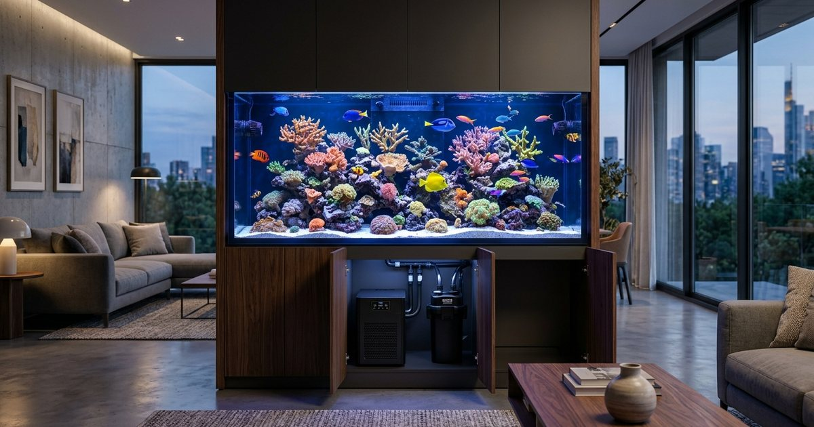
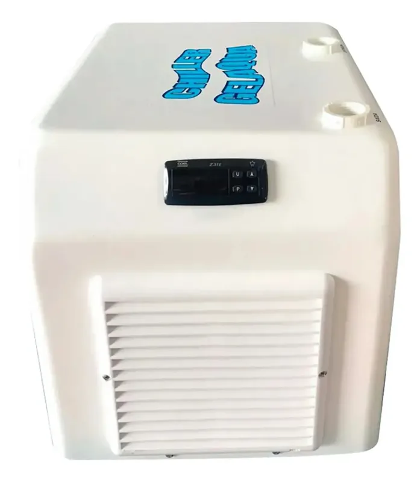
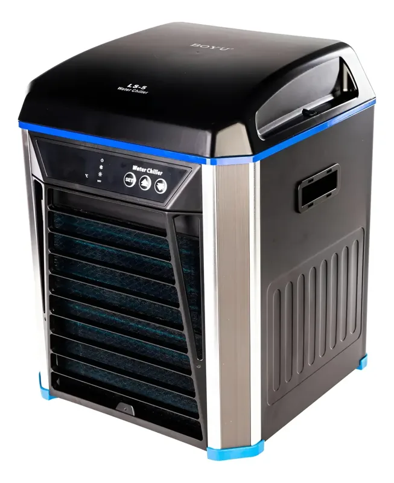
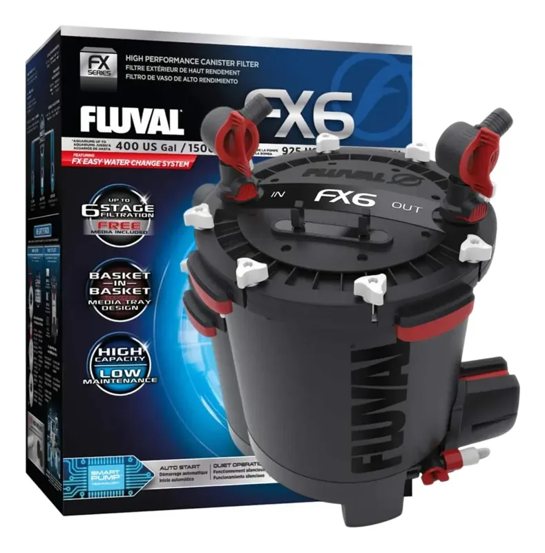
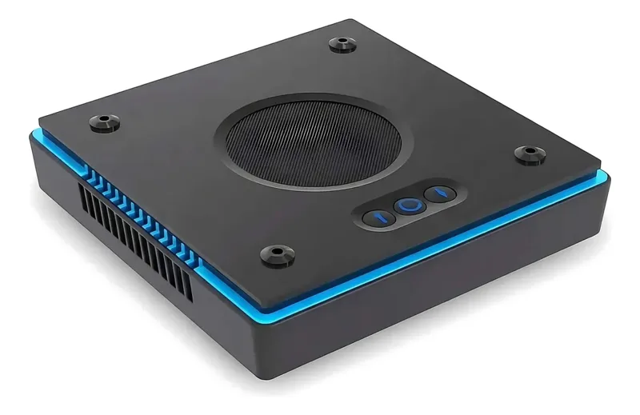

Melhor Chiller para Aquário em 2026: Chiller, Filtro Canister e Luminária Premium

Este post contém links de afiliado. Podemos receber uma comissão em compras feitas através deles, sem custo adicional para você.
No verão brasileiro, a água de um aquário fechado passa facilmente da faixa que corais e muitos peixes toleram, e o aquecedor não resolve o problema ao contrário. O melhor chiller para aquário é o que dá conta da sua litragem com folga, na voltagem da sua casa. Comparamos os dois chillers à venda no Mercado Livre em 27/11/2026, o Gelaqua 1/3 HP e o Boyu LS5, e os dois equipamentos que costumam vir junto num aquário de alto padrão: o filtro canister Fluval FX6 e a luminária EcoTech Radion XR15 G6 Blue. Todos têm envio nacional.
Resposta curta: o chiller Gelaqua 1/3 HP é o melhor para a maioria: atende até 750 litros, tem serpentina de titânio (serve para água salgada), nota 4,9 no Mercado Livre e custa R$ 891 a menos que o Boyu. O Boyu LS5 faz sentido para aquários de até 250 litros em que o visual e o tamanho compacto importam. Para filtragem pesada, o Fluval FX6; para luz de recife, a Radion XR15 G6 Blue, com 29% de desconto.
Quer ver o preço agora? Chiller Gelaqua 1/3 HP no Mercado Livre, 10x sem juros e frete grátis.Link de afiliado — sem custo extra para você.
Ver preço no Mercado Livre →- Melhor chiller: Gelaqua 1/3 HP (R$ 5.599, até 750 L, nota 4,9) Ver preço
- Chiller compacto para até 250 L: Boyu LS5 (R$ 6.490) Ver preço
- Melhor filtro canister para aquário grande: Fluval FX6 (R$ 4.659, até 1.500 L) Ver preço
- Melhor luminária para aquário marinho: EcoTech Radion XR15 G6 Blue (R$ 3.999) Ver preço
Comparativo: 4 Equipamentos Premium para Aquário
Preços consultados no Mercado Livre em 27/11/2026, todos com frete grátis e envio nacional. Preços sujeitos a alteração — confira o valor atual no botão.
| Equipamento | Função | Aquário | Voltagem | Preço | |
|---|---|---|---|---|---|
| Gelaqua 1/3 HP | Chiller | Até 750 L | 110 V ou 220 V | R$ 5.599 | Ver preço |
| Boyu LS5 | Chiller | Até 250 L | 110 V (anúncio) | R$ 6.490 | Ver preço |
| Fluval FX6 | Filtro canister | Até 1.500 L | 127 V (anúncio) | R$ 4.659 | Ver preço |
| Radion XR15 G6 Blue | Luminária LED | 61 a 76 cm de largura e profundidade | Fonte 100–240 V | R$ 3.999 | Ver preço |
Chiller ou Ventoinha: Quando Vale o Investimento
A ventoinha sopra ar sobre a superfície e resfria pela evaporação. Ela é barata e baixa alguns graus, mas aumenta a perda de água (é preciso repor com mais frequência, e em aquário marinho isso mexe na salinidade se a reposição não for de água doce) e perde eficiência em dias úmidos.
O chiller funciona como uma geladeira: a água passa por uma serpentina refrigerada por um compressor e volta mais fria, com temperatura controlada por termostato. É a escolha para aquários de recife, com corais sensíveis a calor, para aquários grandes e para quem não pode depender de ar-condicionado no cômodo. O preço é a barreira: os dois chillers desta lista custam mais de R$ 5 mil.
Os 4 Equipamentos, um a um
Como montamos a lista: não testamos os equipamentos. Usamos as fichas dos fabricantes quando estavam disponíveis, fichas e manuais publicados por revendedores quando o site do fabricante não abriu, e os anúncios do Mercado Livre (preço, parcelamento, frete, nota e vendas visíveis) em 27/11/2026. O que não encontramos aparece como "não informado pelo fabricante".
Chiller Resfriador Gelaqua 1/3 HP (até 750 litros)
Para quem é: aquários marinhos ou de água doce de médio a grande porte, de até 750 litros.

A Gelaqua é uma marca brasileira tradicional de chillers para aquário, e o modelo de 1/3 HP é indicado para aquários de até 750 litros. A serpentina é de titânio, metal que não corrói com água salgada, o que permite usar o aparelho em aquário marinho de recife. A potência informada pelas lojas é de cerca de 250 W, e há versões 110 V e 220 V. Pela foto, o controle é feito por um termostato digital no painel.
Dois detalhes do manual, reproduzidos por lojas especializadas, valem antes de comprar. O primeiro é a bomba: o chiller não tem bomba própria e pede uma de pelo menos 1.200 L/h para empurrar a água pela serpentina. O segundo é a margem: o manual orienta não passar de 800 litros de volume total, somando o sump, e não trabalhar no limite da capacidade. Num aquário de 700 litros num cômodo quente, por exemplo, você estaria perto do teto.
No Mercado Livre, o anúncio tem nota 4,9 e mais de 25 vendidos, a melhor nota entre os quatro equipamentos. E custa R$ 891 a menos que o Boyu, atendendo três vezes a litragem.
| Preço | R$ 5.599 em 27/11/2026, 10x de R$ 559,99 sem juros, frete grátis |
|---|---|
| Aquário | Até 750 L (manual: não passar de 800 L com sump) |
| Potência | 1/3 HP, cerca de 250 W (informado por lojas) |
| Voltagem | 110 V ou 220 V (escolha no anúncio) |
| Serpentina | Titânio (água doce e salgada) |
| Bomba | Não inclusa; mínimo de 1.200 L/h |
| Gás, medidas, ruído e garantia | Não informados nas fontes consultadas |
| Origem | Nacional |
| Avaliações | 4,9 de 5 no Mercado Livre; +25 vendidos |
- Até 750 L, três vezes o Boyu
- Serpentina de titânio, serve para marinho
- Marca nacional, nota 4,9
- 10x sem juros
- Precisa de bomba de 1.200 L/h à parte
- Ficha pública incompleta (gás, medidas, ruído)
- Visual mais simples que o do Boyu
❄️ Chiller Gelaqua 1/3 HP: veja o preço atual no Mercado Livre.
Ver preço atual no Mercado LivreChiller Boyu LS5 (modelo novo)
Para quem é: aquários de até 250 litros em sala, onde o aparelho fica à vista.

A Boyu é uma fabricante chinesa grande de equipamentos de aquarismo, e a série LS é a sua linha de chillers compactos. O anúncio descreve o LS5 como "modelo novo", para aquários de até 250 litros, em 110 V. O desenho é o mais caprichado dos dois chillers, com painel digital e acabamento preto e prateado, o que conta quando o equipamento fica fora do móvel.
Aqui a informação é escassa. Não conseguimos abrir o site da Boyu, e as lojas brasileiras não publicam a ficha do LS5. O que as fontes sobre a série LS dizem: o gás usado é o R134a, as mangueiras são de 12/16 mm, e o manual da série cita os modelos LS como de dupla função, resfriamento e aquecimento. Confirme no anúncio se a sua unidade tem a função de aquecer e qual a vazão de bomba recomendada. Potência, consumo, ruído e garantia no Brasil não foram encontrados.
Por que ficou atrás do Gelaqua? Custa R$ 891 a mais, atende um terço da litragem e tem ficha pública bem menos completa. Só compensa para aquários de até 250 litros em que tamanho e visual pesam na decisão.
| Preço | R$ 6.490 em 27/11/2026, 10x de R$ 649 sem juros, frete grátis |
|---|---|
| Aquário | Até 250 L (anúncio) |
| Voltagem | 110 V (anúncio) |
| Gás | R134a (série LS, segundo revendedores) |
| Mangueira | 12/16 mm (série LS) |
| Potência, ruído e garantia | Não informados nas fontes consultadas |
| Origem | Envio nacional |
| Avaliações | Não exibidas na página de afiliado consultada |
- Compacto e com visual caprichado
- Painel digital
- Série LS citada com função de aquecimento
- O mais caro dos dois chillers, para só 250 L
- Ficha técnica pública incompleta
- Só 110 V no anúncio
🧊 Chiller Boyu LS5: veja o preço atual no Mercado Livre.
Ver preço atual no Mercado LivreFiltro Canister Fluval FX6 (até 1.500 litros)
Para quem é: aquários grandes, plantados ou com peixes que sujam muito, como ciclídeos e acarás-disco em cardume.

O FX6 é o maior filtro externo da linha FX da Fluval, marca canadense. A bomba empurra 3.500 L/h, e a circulação efetiva com mídia é de cerca de 2.130 L/h, segundo fichas de revendedores. Cabem 20 litros de volume filtrante, com 5,9 litros só nos cestos de mídia. A Fluval o indica para aquários de até 400 galões americanos, cerca de 1.500 litros.
O motor consome cerca de 43 W em 120 V, e a bomba vence até 3,3 m de altura, o que dá liberdade para deixar o filtro num móvel abaixo do aquário. A caixa destaca partida automática (a bomba expulsa o ar sozinha ao ligar) e um sistema de troca de água pelo próprio filtro. Ocupa 40 x 40 x 53 cm, então meça o móvel antes.
O anúncio é da versão 127 V e estava 16% abaixo do preço anterior. Não conseguimos abrir o site da Fluval, que bloqueia acessos automáticos, então a garantia não foi confirmada: pergunte ao vendedor.
| Preço | R$ 4.659 (de R$ 5.565) em 27/11/2026, 10x de R$ 466 sem juros, frete grátis |
|---|---|
| Aquário | Até 1.500 L |
| Vazão | Bomba 3.500 L/h; circulação filtrada ≈ 2.130 L/h |
| Mídia | 20 L de volume filtrante; cestos de 5,9 L |
| Altura máxima | 3,3 m |
| Consumo | 43 W (120 V) |
| Medidas | 40 x 40 x 53 cm |
| Voltagem | 127 V (anúncio) |
| Garantia | Não confirmada (site do fabricante inacessível) |
| Origem | Envio nacional |
- Atende até 1.500 L
- 20 L de mídia e 3.500 L/h na bomba
- Partida automática; consumo baixo para o porte
- 16% de desconto, 10x sem juros
- Grande: 40 x 40 x 53 cm
- Garantia não confirmada
- Superdimensionado para aquários pequenos
💧 Fluval FX6: veja o preço atual no Mercado Livre.
Ver preço atual no Mercado LivreLuminária EcoTech Marine Radion XR15 G6 Blue
Para quem é: aquários de recife de até 61 a 76 cm de largura e profundidade, com corais.

A Radion é uma das luminárias mais usadas em aquários de recife, e a XR15 é o modelo menor da sexta geração. São 95 W e 51 LEDs com óptica de 126,3°. A versão Blue puxa o espectro para o azul: 16 royal blue, 16 blue, 4 brancos frios e 2 brancos quentes, além de LEDs violeta e ultravioleta (395 a 430 nm), um vermelho e um de luar. A versão Pro troca parte do azul por verde e mais branco.
O controle é sem fio pelo app Mobius, com programação completa de intensidade e cor ao longo do dia. A EcoTech indica a XR15 para aquários de 24 a 30 polegadas (61 a 76 cm) de largura e profundidade; aquários maiores pedem duas unidades ou o modelo XR30. A fonte é bivolt (100–240 V), o que simplifica no Brasil. A luminária mede 18 x 18 x 3,9 cm e pesa 1,59 kg; o suporte vende-se à parte.
Com 29% de desconto, era o maior corte de preço entre os quatro equipamentos. A garantia é de 1 ano, mas a EcoTech exige registro em até 30 dias da compra.
| Preço | R$ 3.999 (de R$ 5.649) em 27/11/2026, 10x de R$ 399,90 sem juros, frete grátis |
|---|---|
| Potência | 95 W |
| LEDs | 51, espectro Blue; óptica HEI2 de 126,3° |
| Aquário indicado | 61 a 76 cm de largura e profundidade |
| Controle | Sem fio, app Mobius |
| Fonte | 100–240 V, 50/60 Hz |
| Medidas e peso | 18 x 18 x 3,9 cm; 1,59 kg |
| Suporte | Vendido à parte (braço RMS) |
| Garantia | 1 ano, com registro em até 30 dias |
| Origem | Envio nacional |
- Espectro azul pensado para corais
- Programação completa pelo app
- Fonte bivolt
- 29% de desconto
- Uma unidade cobre só aquários de até 76 cm
- Suporte vendido à parte
- Garantia depende de registro em 30 dias
💡 Radion XR15 G6 Blue: veja o preço atual no Mercado Livre.
Ver preço atual no Mercado LivreGuia de Compra: Como Escolher Chiller, Filtro e Luminária
1. Como escolher o chiller pela litragem
Some o volume do aquário e do sump: é esse total que o chiller precisa resfriar. Depois, olhe o calor do cômodo. A litragem máxima informada pelo fabricante pressupõe condições razoáveis; num cômodo sem ar-condicionado no verão, ou com luminária potente esquentando a água, escolha um chiller com folga. O manual do Gelaqua, por exemplo, pede para não trabalhar no limite.
2. Água salgada pede serpentina resistente
Em aquário marinho, a serpentina do chiller fica em contato com água salgada o tempo todo. O Gelaqua informa serpentina de titânio; no Boyu, confirme com o vendedor.
3. Bomba e vazão
Chillers como os desta lista não têm bomba própria. A bomba precisa ter vazão suficiente (o Gelaqua pede no mínimo 1.200 L/h) e mangueiras do diâmetro certo (12/16 mm na série Boyu LS). Se o seu canister for empurrar a água pelo chiller, considere a perda de vazão.
4. Filtro canister pelo volume e pela carga
Aquário muito povoado ou com peixes grandes precisa de filtro acima da litragem nominal. O Fluval FX6 é indicado para até 1.500 litros; em aquários bem menores, ele vai sobrar e ocupar espaço à toa.
5. Luminária pela área, não pela litragem
Para corais, importa cobrir a área do aquário com luz uniforme. A Radion XR15 cobre de 61 a 76 cm de largura e profundidade; aquários maiores precisam de mais unidades.
6. Voltagem e garantia
O Boyu do anúncio é 110 V e o Fluval é 127 V. O Gelaqua tem versões 110 V e 220 V, e a Radion usa fonte bivolt. Compre na voltagem certa e não use transformador em compressor de chiller sem orientação técnica. Pergunte ao vendedor sobre garantia e assistência no Brasil, já que só a EcoTech publica a sua.
Comparativos Diretos
Gelaqua 1/3 HP vs Boyu LS5
| Gelaqua 1/3 HP | Boyu LS5 | |
|---|---|---|
| Preço (27/11) | R$ 5.599 | R$ 6.490 |
| Aquário | Até 750 L | Até 250 L |
| Voltagem | 110 V ou 220 V | 110 V |
| Serpentina | Titânio | Não informada |
| Avaliação no ML | 4,9, +25 vendidos | Não exibida |
Veredito: o Gelaqua ganha em litragem, preço, informação e avaliação. O Boyu só vale para aquário pequeno em que o chiller fica à vista.
Fluval FX6 vale a pena?
Vale para aquários grandes, acima de algumas centenas de litros, ou muito povoados: 20 litros de mídia e bomba de 3.500 L/h são difíceis de igualar num único canister. Para aquários pequenos e médios, um filtro menor custa menos e ocupa menos espaço.
Perguntas Frequentes
Qual o melhor chiller para aquário?
Entre os chillers à venda no Mercado Livre em 27/11/2026, o Gelaqua 1/3 HP é a melhor escolha para a maioria: atende até 750 litros, tem serpentina de titânio para água salgada, nota 4,9 e custa R$ 5.599. O Boyu LS5, de R$ 6.490, é indicado para aquários de até 250 litros.
Como escolher chiller pela litragem?
Some o volume do aquário e do sump e escolha um chiller com capacidade acima desse total, principalmente se o cômodo esquenta no verão ou a luminária aquece a água. Evite trabalhar no limite: o manual do Gelaqua 1/3 HP, indicado para 750 litros, pede para não passar de 800 litros somando o sump.
Chiller ou ventoinha para aquário?
A ventoinha é barata e baixa alguns graus pela evaporação, mas aumenta a perda de água e perde força em dias úmidos. O chiller resfria com compressor e termostato, mantendo a temperatura estável. Para aquário de recife, aquário grande ou cômodo muito quente, o chiller é a opção mais segura.
Fluval FX6 é para quantos litros?
A Fluval indica o FX6 para aquários de até 400 galões americanos, cerca de 1.500 litros. A bomba tem 3.500 L/h e a circulação efetiva com mídia fica em torno de 2.130 L/h, com 20 litros de volume filtrante. Em aquários pequenos, ele fica superdimensionado.
Qual a diferença entre Radion XR15 G6 Blue e Pro?
As duas têm 95 W e 51 LEDs. A Blue concentra mais LEDs azuis (16 blue contra 8) e não tem LEDs verdes, para um visual mais azulado e foco em corais. A Pro tem mais branco e verde, com luz de aparência mais natural. O controle pelo app Mobius é o mesmo.
Chiller pode ser usado em aquário de água salgada?
Pode, desde que a serpentina seja de material resistente à corrosão, como o titânio. O Gelaqua 1/3 HP informa serpentina de titânio. Em outros modelos, confirme o material antes de usar em aquário marinho, porque a água salgada corrói metais comuns.
Conclusão: Qual Comprar
- Chiller para aquário de até 750 litros, doce ou marinho: Gelaqua 1/3 HP.
- Chiller compacto e bonito para até 250 litros: Boyu LS5.
- Filtragem para aquário grande: Fluval FX6.
- Luz para recife de até 76 cm: Radion XR15 G6 Blue.
Os descontos de Black Friday são reais nos anúncios: 29% na Radion e 16% no Fluval em relação ao preço anterior. Para outros equipamentos premium, veja o guia de produtos pet premium que valem o investimento, a melhor caixa de areia automática, o melhor secador para pet shop e os produtos pet de alto padrão.
Veja nossa política editorial e como verificamos as fontes citadas neste artigo. Fichas técnicas: EcoTech Marine Radion, fichas de revendedores para Fluval, Gelaqua e Boyu, consultadas em 27/11/2026.
🐠 Chiller Gelaqua 1/3 HP: até 750 litros com serpentina de titânio.
Ver preço atual no Mercado LivreLink de afiliado: podemos receber uma comissão por compras feitas através deste link, sem custo adicional para você. Preços sujeitos a alteração — confira o valor atual no botão.